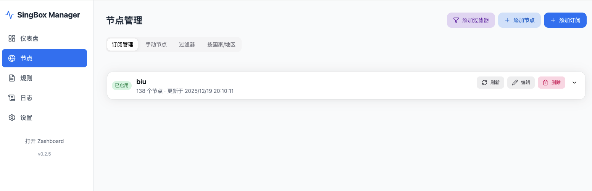

手机端使用
CMSingBox 手机端分两件事：手机浏览器负责管理后台；手机上的 sing-box 等客户端负责真正接管其他 App 的流量。两者不要混淆。
一、用手机浏览器管理
- 手机与 CMSingBox 处于同一局域网，打开
http://CMSingBox-IP:80。 - 登录后点左上角菜单展开侧栏；页面会自动适配窄屏。
- 节点、订阅和设置页面按单列显示，长表格和 JSON 可横向滑动。
- 修改后必须点击“保存设置”，需要生效时再应用配置或重启 sing-box。
公网访问建议不要直接把后台 80、9090 暴露到互联网；优先使用 HTTPS 反向代理、VPN 或访问控制。
二、手机添加订阅
在“节点与订阅”页面点击添加订阅。长订阅链接请使用系统粘贴功能；保存后点击刷新，并确认节点数量和更新时间。订阅刷新失败时先用手机浏览器打开链接确认能访问，再回到后台查看日志。

三、让手机 App 使用代理
管理页面本身不会让其他 App 自动走代理。根据部署方式选择一种：
- Wi‑Fi 旁路由：让手机 Wi‑Fi 获取 CMSingBox 的 DNS；路由器还要配置 FakeIP 目标路由，详见对应路由器教程。
- 显式代理：在 Wi‑Fi 的 HTTP 代理中填写 CMSingBox 局域网 IP 和混合代理端口（默认
2080）；仅支持遵循系统代理的 App。 - 移动客户端配置：在高级配置中复制客户端配置链接或下载配置文件，再在兼容的 sing-box 客户端中导入。
移动网络离开家中 Wi‑Fi 后，局域网 IP 和 53 端口通常不可达；需要公网入口、VPN 或回家服务。不要把内网地址直接填到蜂窝网络客户端。
四、手机 DNS 注意事项
手机 Wi‑Fi 的 DNS 应填写 CMSingBox 的局域网 IP，不是 127.0.0.1、127.0.0.1:1053 或代理上游地址。若手机开启“私有 DNS / 安全 DNS”，它可能绕过局域网 DNS；测试旁路由时先关闭该功能或改为自动。
五、手机端排障
- 后台能打开但 App 不代理：检查客户端是否导入配置、节点组是否有可用节点。
- 只有部分网站报错：先关闭浏览器安全 DNS，清除 DNS 缓存，再检查 FakeIP 路由。
- 订阅导入后没有节点：在后台刷新订阅，确认订阅源返回的是支持的格式。
- 管理页面打不开：确认手机与 CMSingBox 在同一网段，并使用实际局域网 IP，不要使用
127.0.0.1。